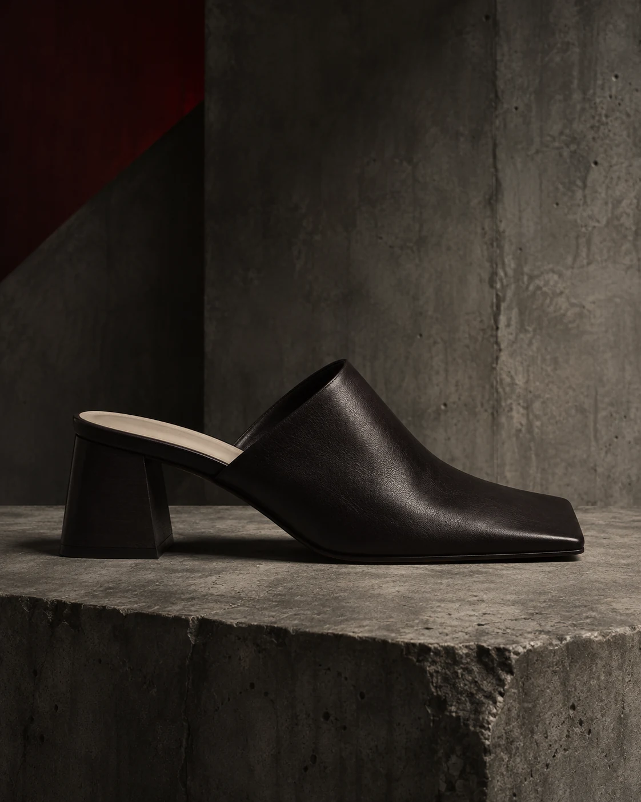
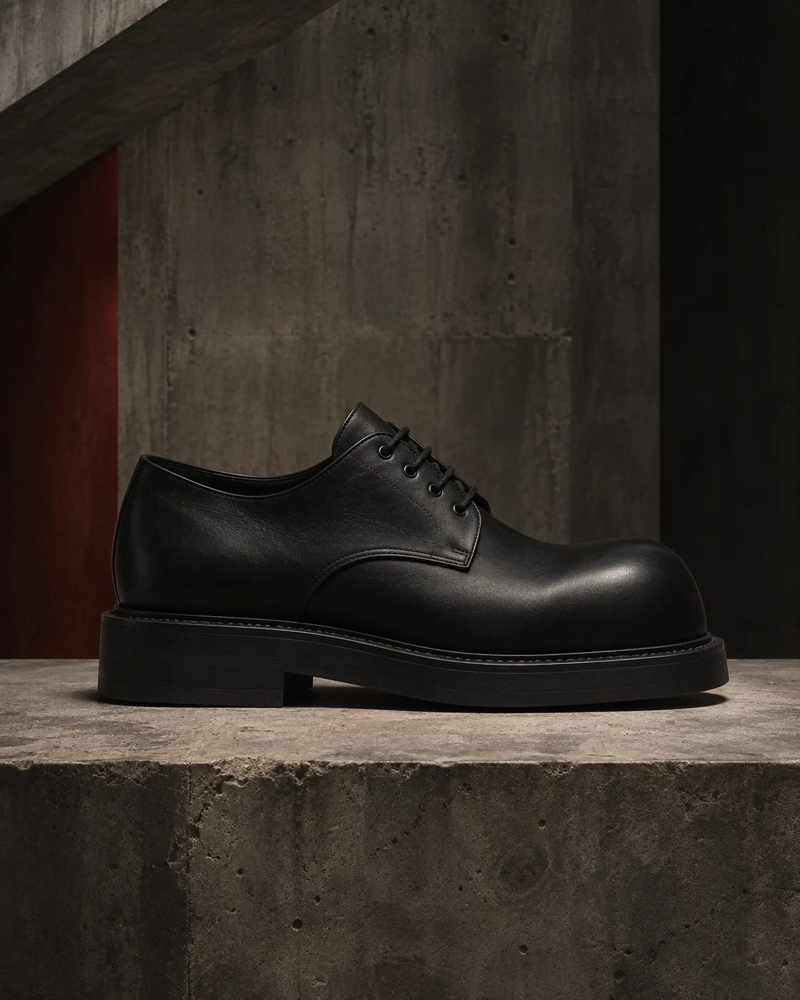
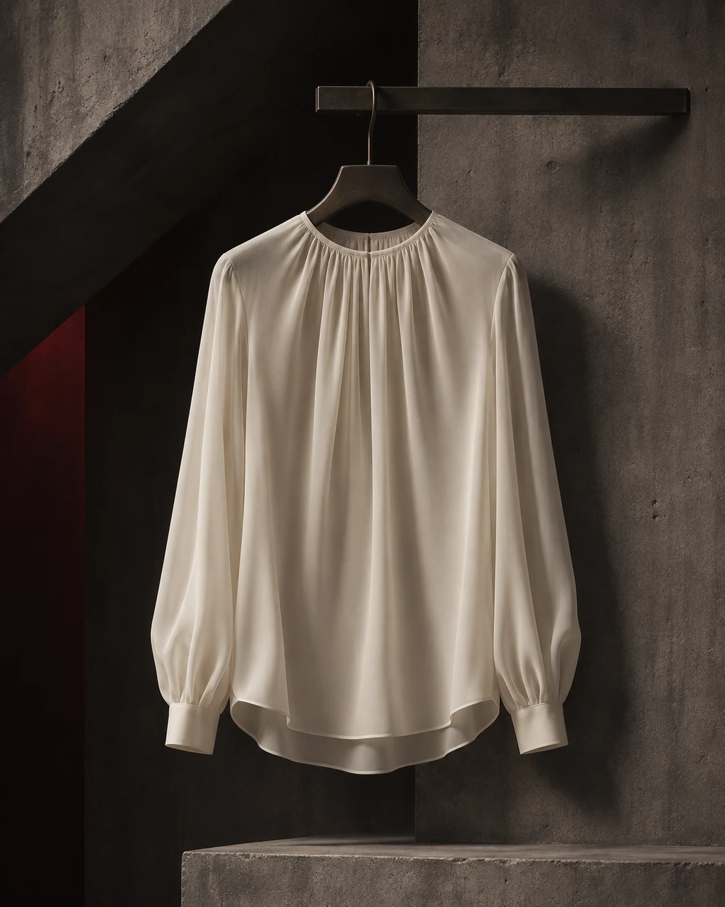
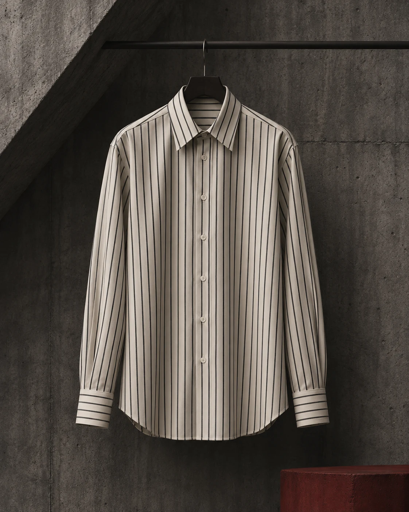
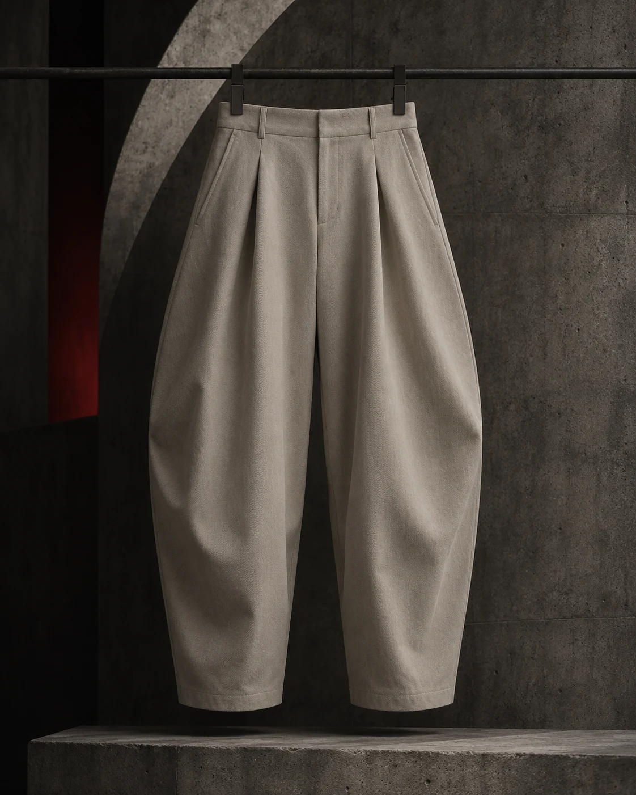
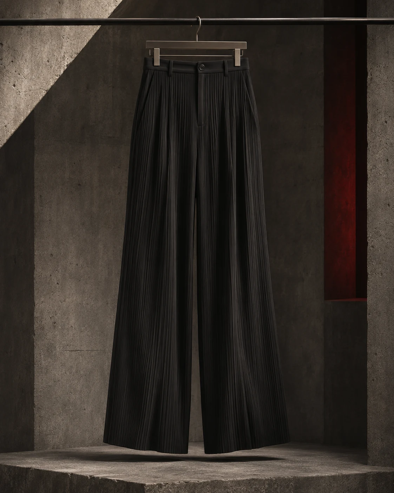
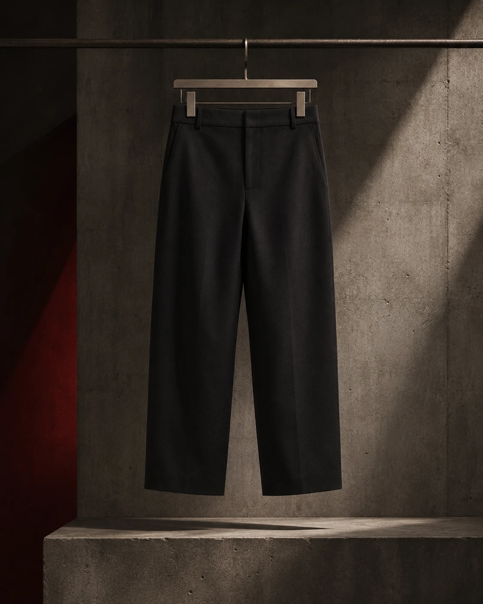
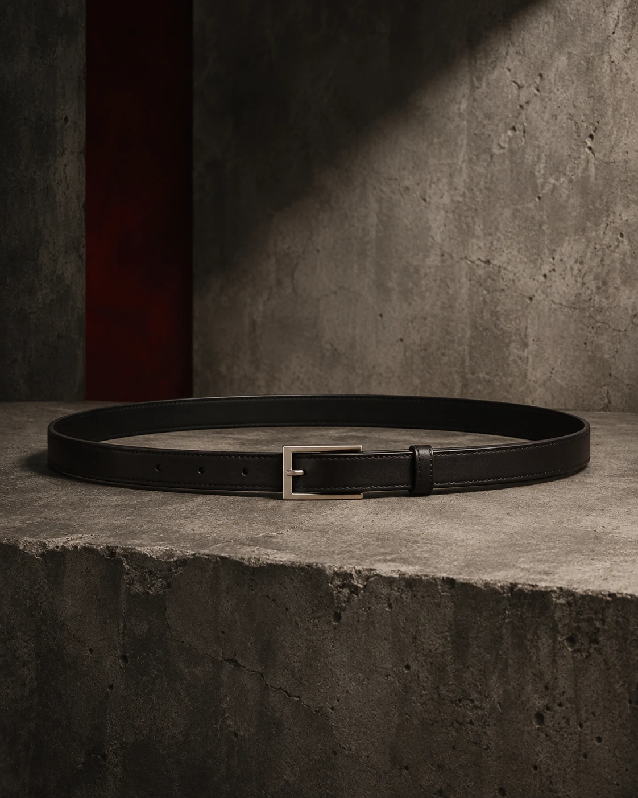
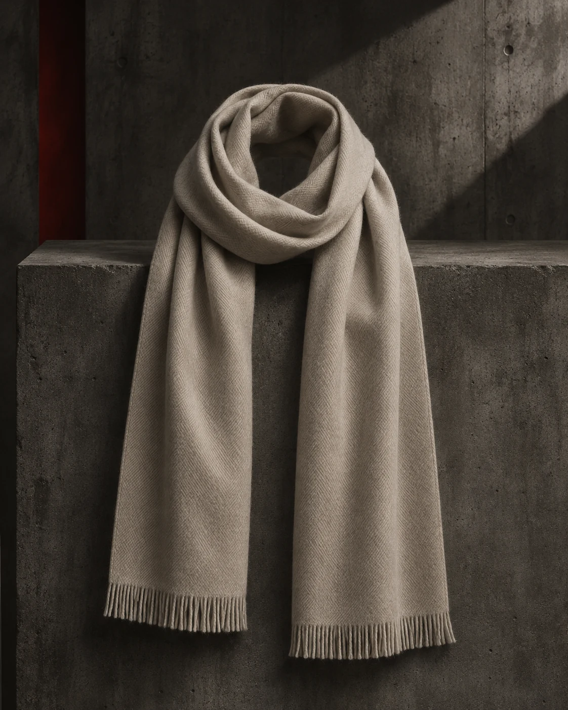
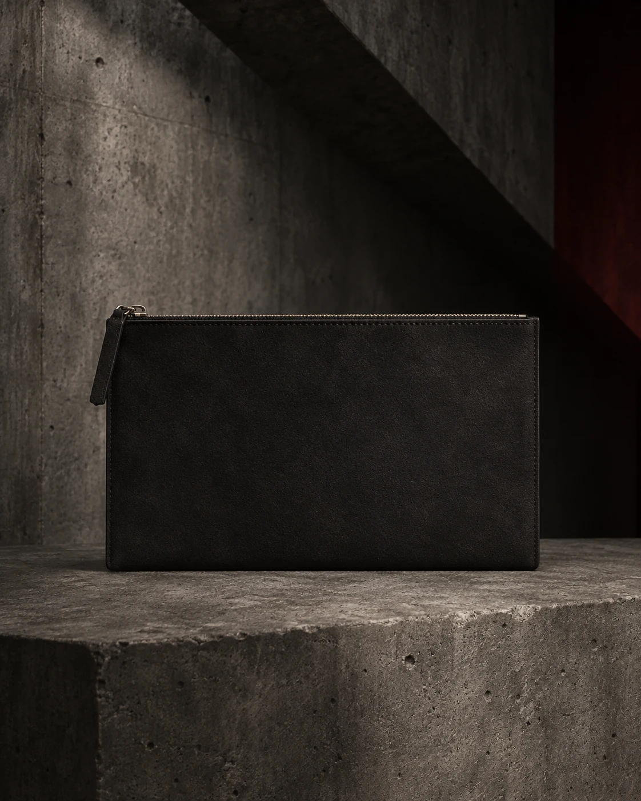

Sillage Loafer
A low-profile loafer with a clean vamp and softly structured shape.
€320View product
The twenty canonical references of the Industrial Maison Rouge study. A collection defined by shape, proportion and restraint.
Four disciplines. One vocabulary.
Filters apply locally to these 20 fictional product references; no live inventory or search service is connected.
A low-profile loafer with a clean vamp and softly structured shape.

A quiet low-top sneaker balancing textile panels with tonal suede.

A minimal ankle boot with a straight shaft and grounded sole.

An open-back mule with a squared profile and restrained finish.

A pared-back derby with a broad toe and low-contrast construction.

A crisp oversized shirt with a long line and clean collar.

A relaxed collared shirt with a soft drape and straight hem.

A structured overshirt with patch pockets and a workwear-influenced line.

A fluid collarless blouse with a softly gathered neckline.

A straight striped shirt with precise cuffs and restrained proportions.

A relaxed tailored pant with a high rise and soft front pleat.

A curved-leg cotton pant with a compact waist and fuller volume.

A straight dark-wash jean with minimal finishing and a clean hem.

A fluid pleated pant with fine vertical texture and an easy line.

A straight studio pant with a flat front and slightly cropped length.

A structured shoulder bag with a rectangular body and narrow strap.

A curved shoulder bag with a low profile and softly rounded base.

A narrow belt with a plain rectangular buckle and clean edge finish.

A long soft scarf with a plain weave and subtle fringe.

A slim zip pouch with a flat profile and discreet pull.